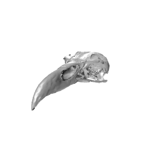
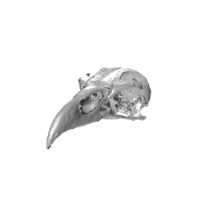
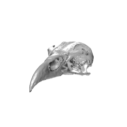
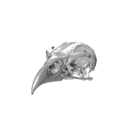
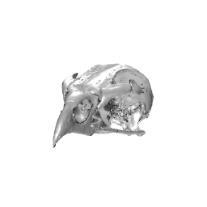

library(dplyr)
library(ggplot2) #3.5.1
library(plotly) #4.10.4
set.seed(1)
t <- 0:100 # generate time vector
dt <- NULL # generate object to compile time-series data
cols <- NULL # generate object to compile trendline coloursEvolutionary lottery of skull and beak morphology
gif provided by the awesome Jen Bright @MorphobeakGeek!

In this exercise we will use a github repo to collaboratively collate and simulate evolutionary trajectories for each participants’ species body size using a simple brownian motion evolutionary model. This assumes evolutionary steps to progress comletely at random. You could say:
it’s a bit of lottery!
Each participant has created and contributed a file specifying the parameters required to simulate and plot their species evolutionary trajectory. We’ve collect all participants’ files in the master repo. Next we need to simulate species trajectories plot them up.
Participants will then get to see the skull and beak shape corresponding to their species relative body size!
setup
First we load the required packages and create some objects to compile data on trait evolution for each species.
Simulate trait evolution, iterate over all species files in params/ folder
We’ll use the parameters supplied in your scripts to generate brownian trait evolution trendline for each species.
#getting the file names for everything except the template that has undefined values
spp.files <- dir("params/")[dir("params/") != "params_tmpl.R"]
for(spp in spp.files){
# source parameters for each species
source(file.path("params", spp))
# generate trait evolution time-series and compile plotting data
dt <- rbind(dt, data.frame(t,
trait = c(0, rnorm(n = length(t) - 1, sd = sqrt(sig2)) |> cumsum()),
species = species.name))
cols <- c(cols, color)
}Installing package into '/home/runner/work/_temp/Library'
(as 'lib' is unspecified)also installing the dependencies 'commonmark', 'httpuv', 'sourcetools', 'xtable', 'miniUI', 'shiny', 'shinyjs'Plot trait evolution timeseries
Use the data generated to plot all species.
# Specify the order of species based on the order of colors in cols to stop a mismatch in colours
dt$species <- factor(dt$species, levels = unique(dt$species))
# Create the ggplot object
p <- ggplot(data = dt, aes(x = t, y = trait, group = species, colour = species)) +
geom_line() +
scale_colour_manual(values = cols)
# Plot the results
ggplotly(p)Skulls! find the skull associated with your species:
Skulls are organised from largest to smallest. The largest skulls are vulture-like, (e.g. no. 50, the Andean condor Vultur gryphus) and the smallest are falconet-like, (e.g. no. 1 Collared falconet Microhierax caerulescens)
No: 32 emily_rocks

No: 32 anas_krystallinus
No: 29 Micropterus salmoides davidii

No: 26 Saras_Kiri
No: 20 Fresh_Franzi

No: 20 annes_creature
No: 19 kenny_anthropux
No: 2 malika_rocks

Session Info
sessioninfo::session_info()─ Session info ───────────────────────────────────────────────────────────────
setting value
version R version 4.5.3 (2026-03-11)
os Ubuntu 24.04.4 LTS
system x86_64, linux-gnu
ui X11
language (EN)
collate C.UTF-8
ctype C.UTF-8
tz UTC
date 2026-05-12
pandoc 3.1.3 @ /usr/bin/ (via rmarkdown)
quarto 1.9.37 @ /usr/local/bin/quarto
─ Packages ───────────────────────────────────────────────────────────────────
package * version date (UTC) lib source
cli 3.6.6 2026-04-09 [1] RSPM
crosstalk 1.2.2 2025-08-26 [1] RSPM
data.table 1.18.4 2026-05-06 [1] RSPM
digest 0.6.39 2025-11-19 [1] RSPM
dplyr * 1.2.1 2026-04-03 [1] any (@1.2.1)
evaluate 1.0.5 2025-08-27 [1] RSPM
farver 2.1.2 2024-05-13 [1] RSPM
fastmap 1.2.0 2024-05-15 [1] RSPM
generics 0.1.4 2025-05-09 [1] RSPM
ggplot2 * 4.0.3 2026-04-22 [1] any (@4.0.3)
glue 1.8.1 2026-04-17 [1] RSPM
gtable 0.3.6 2024-10-25 [1] RSPM
htmltools 0.5.9 2025-12-04 [1] RSPM
htmlwidgets 1.6.4 2023-12-06 [1] RSPM
httr 1.4.8 2026-02-13 [1] RSPM
jsonlite 2.0.0 2025-03-27 [1] RSPM
knitr 1.51 2025-12-20 [1] RSPM
labeling 0.4.3 2023-08-29 [1] RSPM
lazyeval 0.2.3 2026-04-04 [1] RSPM
lifecycle 1.0.5 2026-01-08 [1] RSPM
magrittr 2.0.5 2026-04-04 [1] RSPM
otel 0.2.0 2025-08-29 [1] RSPM
pillar 1.11.1 2025-09-17 [1] RSPM
pkgconfig 2.0.3 2019-09-22 [1] RSPM
plotly * 4.12.0 2026-01-24 [1] any (@4.12.0)
purrr 1.2.2 2026-04-10 [1] RSPM
R6 2.6.1 2025-02-15 [1] RSPM
RColorBrewer 1.1-3 2022-04-03 [1] RSPM
rlang 1.2.0 2026-04-06 [1] RSPM
rmarkdown 2.31 2026-03-26 [1] any (@2.31)
S7 0.2.2 2026-04-22 [1] RSPM
scales 1.4.0 2025-04-24 [1] RSPM
sessioninfo 1.2.3 2025-02-05 [1] any (@1.2.3)
tibble 3.3.1 2026-01-11 [1] RSPM
tidyr 1.3.2 2025-12-19 [1] RSPM
tidyselect 1.2.1 2024-03-11 [1] RSPM
vctrs 0.7.3 2026-04-11 [1] RSPM
viridisLite 0.4.3 2026-02-04 [1] RSPM
withr 3.0.2 2024-10-28 [1] RSPM
xfun 0.57 2026-03-20 [1] RSPM
yaml 2.3.12 2025-12-10 [1] RSPM
[1] /home/runner/work/_temp/Library
[2] /opt/R/4.5.3/lib/R/site-library
[3] /opt/R/4.5.3/lib/R/library
* ── Packages attached to the search path.
──────────────────────────────────────────────────────────────────────────────